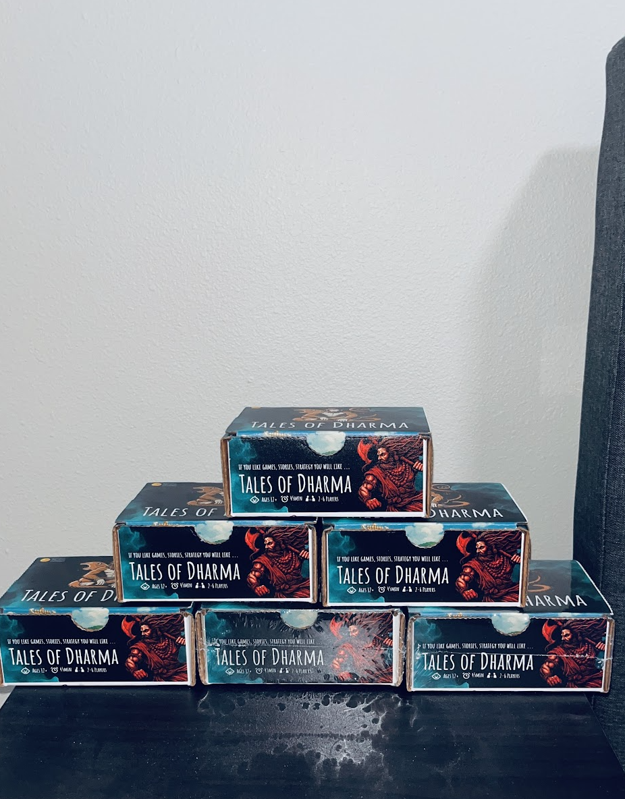
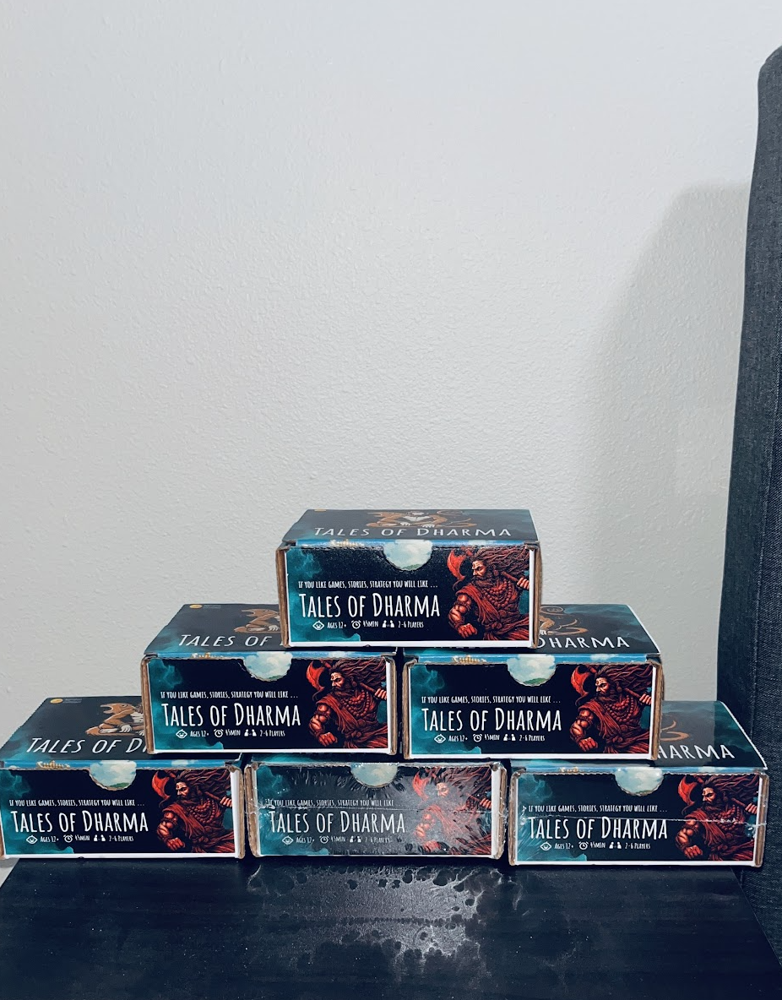

Tales of Dharma: Designing Community-Driven Games for Religious Cultural Education
Most serious games teaching religion and culture are designed as single-player experiences, focusing on individual learning through structured gameplay. But religion and culture are fundamentally community-driven—built on collective storytelling, shared rituals, and intergenerational knowledge transfer. Single-player religious games often fail because they teach to individuals in isolation rather than fostering the communal storytelling essential to authentic religious experience.
This case study documents Tales of Dharma, a card game designed to address this fundamental misalignment. Rather than another educational game about Hindu mythology, Tales of Dharma creates a space for collective storytelling where 2-6 players share personal memories, family traditions, and cultural knowledge sparked by mythological cards. Through 10 qualitative playtesting sessions analyzing video footage of participants playing together, we discovered how community-driven gameplay can foster deeper connections to faith and culture than single-player religious games.
The Problem
Single-player religious games isolate learners from community: Traditional educational games about religion focus on teaching individuals facts about deities, texts, or practices through structured gameplay. A player might learn that Lakshmi is the goddess of wealth or that Diwali celebrates light over darkness, but this knowledge remains isolated—individual facts learned in solitude rather than living wisdom shared within community.
Culture requires storytelling and collective knowledge: Religious and cultural understanding isn't just about knowing information—it's about participating in ongoing traditions, sharing stories across generations, and feeling connected to a community of practitioners. When a parent shares how their family celebrates a festival differently than their neighbor, or when someone explains why a particular temple holds personal significance, authentic cultural transmission happens. Single-player games can't facilitate this communal storytelling.
The disconnect: Parents and educators want games that help youth engage with their religious culture, but existing single-player religious games feel sterile—like quizzes with mythological themes rather than authentic cultural experiences. Players learn information but don't develop the personal connections, family stories, or community relationships that make religion meaningful beyond academic knowledge.
Design opportunity: What if a game could create space for community-driven storytelling rather than solo learning? What if gameplay mechanics encouraged players to share personal experiences, family memories, and local interpretations rather than regurgitating facts? Tales of Dharma emerged from this design question.
My Approach
As Lead Designer and Researcher, I designed, playtested, and iterated on Tales of Dharma through multiple phases:
- Design phase: Created card game mechanics that incentivize storytelling and community participation rather than individual achievement
- Iterative development: Refined card designs through multiple iterations based on playtesting feedback
- Qualitative evaluation: Conducted 10 playtesting sessions with 2-6 players each, analyzing video footage to understand how gameplay facilitated community storytelling
- Packaging refinement: Iterated from single-box to corrugated material packaging based on durability and user feedback
- Community validation: Launched commercially, with over 1000 copies sold, confirming market demand for community-driven religious games
Key Outcomes
- Fostered community storytelling: Playtest analysis revealed participants sharing personal stories, family memories, and visits to places of worship triggered by cards
- Enhanced cultural connection: Participants reported feeling more connected to their faith and culture through collective gameplay rather than solo educational content
- Validated design hypothesis: Community-driven gameplay proved more effective for religious education than single-player approaches
- Commercial validation: 1000+ copies sold demonstrated market demand for community-oriented religious games
- Design framework developed: Created reusable principles for designing games that facilitate communal cultural transmission
Designing for Community Storytelling
The core design challenge was creating gameplay mechanics that incentivize community participation rather than individual achievement. Most card games reward competitive optimization or strategic decision-making—mechanics that encourage players to focus on winning rather than sharing stories. Tales of Dharma needed different mechanics.
Card Design Philosophy
Each card in Tales of Dharma features mythological characters, deities, and narrative elements from Hindu traditions. Rather than providing complete background information, cards serve as storytelling prompts that encourage players to share their own knowledge, memories, and interpretations. When a player draws a card featuring Hanuman, they might share their family's tradition of visiting a particular Hanuman temple, or explain how their grandmother told stories about Hanuman's devotion to Rama.
Design Principle: Incomplete Information as Invitation
By providing evocative illustrations and minimal text rather than comprehensive encyclopedia entries, cards create "knowledge gaps" that naturally prompt players to fill in details from their own experiences. This isn't bad design—it's intentional design to facilitate collective sense-making rather than passive reception of information.
Card Design Iterations
The card designs underwent multiple iterations based on playtesting feedback. Early versions included more text and background information, but we discovered that less information on cards encouraged more storytelling during gameplay. The final designs balance visual appeal with narrative flexibility.

.png)

Iterative card designs and final designs measuring 2.5 inches by 3.5 inches.
Qualitative Playtesting: Understanding Community Impact
To evaluate whether community-driven gameplay effectively fosters cultural connection, I conducted 10 qualitative playtesting sessions with 2-6 players each. Each session was video-recorded to enable detailed analysis of how gameplay facilitated storytelling and cultural engagement.
Study Design
- 10 playtesting sessions: Groups of 2-6 participants playing Tales of Dharma together
- Video analysis: Recorded sessions captured verbal storytelling, card interactions, and group dynamics
- Qualitative analysis: Thematic analysis of transcripts identifying patterns in storytelling behaviors and cultural engagement
- Participant diversity: Sessions included family groups, friend circles, and intergenerational players to understand varied community contexts
Key Findings from Playtest Analysis
Finding 1: Cards Triggered Personal Storytelling
Analysis of video footage revealed that participants frequently shared personal stories when specific cards appeared. A card featuring a temple prompted players to describe places of worship they'd visited, while character cards sparked family memories of mythological stories heard in childhood.
Finding 2: Collective Storytelling Enhanced Cultural Connection
Participants consistently reported feeling more connected to their faith and culture through shared gameplay than through solo learning. The act of collaboratively exploring mythological narratives created a sense of community engagement that individual educational games couldn't replicate.
Finding 3: Places of Worship Became Central to Discussions
Cards featuring deities and mythological places frequently prompted discussions about real-world locations: temples visited during pilgrimages, local celebrations, family traditions at specific shrines. This connection between mythological narratives and lived experience proved crucial for authentic cultural engagement.
Design Implications
The playtesting revealed that game mechanics encouraging collective participation (rather than individual competition) were essential for fostering community storytelling. When gameplay rewarded sharing knowledge and collaborating on narrative construction, participants naturally engaged in cultural transmission behaviors—behaviors that single-player religious games could never facilitate.
Packaging Iteration: From Single Box to Corrugated Materials
Packaging became a critical design consideration as we moved from prototypes to commercial production. Initial designs used single-box packaging, but playtesting revealed durability and usability issues that required iteration.
Initial Packaging: Single Box
The first production run used standard cardboard box packaging containing all cards in a single container. While functional, players reported that the box didn't withstand repeated opening and closing during family gameplay sessions. Cards became difficult to organize and the box showed wear quickly.
Iteration: Corrugated Material Packaging
Based on user feedback and durability testing, subsequent production runs used corrugated material boxes with dividers for card organization. This improved storage, protected cards better during transportation, and maintained structural integrity through extended use. The packaging evolution demonstrated responsiveness to real-world usage patterns.
 

Packaging iterations: From single box to corrugated material boxes
Commercial Success and Validation
Over 1000 copies of Tales of Dharma have been sold, demonstrating market demand for community-driven religious games. The commercial success validates that there's appetite for games that facilitate communal cultural engagement rather than individual learning. Buyers included families, educational institutions, and cultural organizations seeking ways to transmit religious knowledge through collective play.
Market Validation
The sales success indicates that the problem we identified—single-player religious games failing to foster community connection—resonates with real families and educators. Parents and religious educators actively seek games that bring families together for shared cultural experiences rather than isolating youth with educational content.
Conclusion
Tales of Dharma demonstrates that designing religious educational games requires fundamentally different approaches than designing solo learning games. When games encourage community participation, collective storytelling, and shared knowledge-building, they can foster deeper connections to faith and culture than individual learning experiences. The qualitative research revealed that players don't just learn information—they engage in living cultural transmission behaviors that strengthen community bonds and personal religious identity.
Design principles for community-driven religious games: The research suggests several key principles: create mechanics that reward collective participation over individual achievement, use incomplete information that invites sharing rather than complete information that requires memorization, design for spaces where personal stories can emerge naturally, and facilitate connections between mythological narratives and lived religious experiences.
Future directions: Tales of Dharma represents a proof-of-concept for community-driven religious education. The framework of collective storytelling, community participation, and lived experience connection could extend to other religious traditions and cultural contexts. As interest in culturally-grounded games grows, designers have opportunities to create experiences that strengthen community bonds rather than isolating learners.
Skills & Methods Demonstrated
Design: Game Design • Card Game Mechanics • Iterative Design • Playtesting
Research: Qualitative Methods • Video Analysis • Thematic Analysis • User-Centered Design
Development: Product Iteration • Packaging Design • Commercial Launch
Impact: Community Engagement • Cultural Education • Market Validation